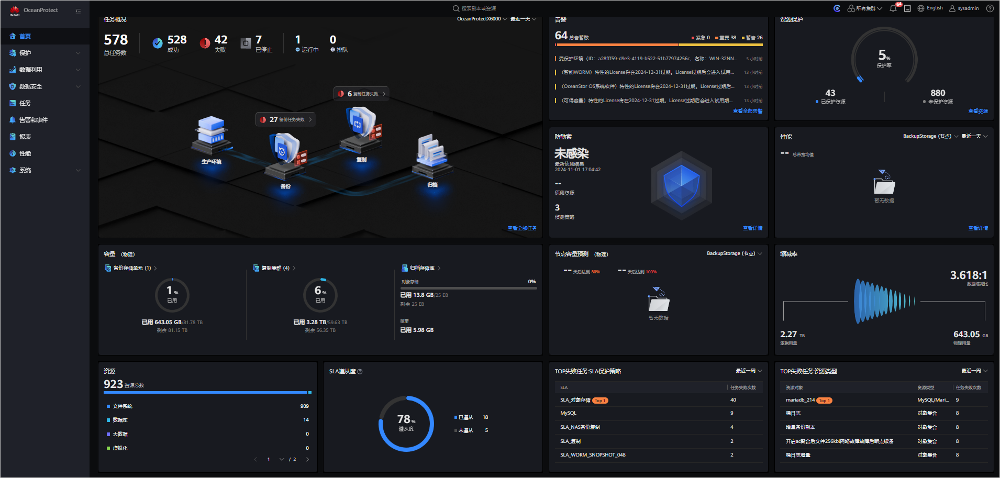

OceanProtect软件是OceanProtect的业务管理平台。OceanProtect出厂时，OceanProtect软件已经加载在OceanProtect中。在任意一台与OceanProtect连接的维护终端上，通过浏览器访问OceanProtect的管理网口IP地址，可以登录OceanProtect管理界面。
前提条件
- 使用OceanProtect管理界面前请先检查维护终端是否满足使用要求：
- 操作系统及浏览器的兼容性
OceanProtect管理界面支持多种操作系统和浏览器，具体的兼容性信息可以通过OceanProtect兼容性查询工具进行查询。
- 为了保证显示正常，建议浏览器缩放比例或系统显示比例为100%。
- Windows 7操作系统通过“控制面板 > 显示”进行设置，其他操作系统请根据实际界面操作。
- 浏览器通过按“Ctrl+0”（Windows）或“Command+0”（MAC OS）快速进行设置。
- 维护终端和OceanProtect通信正常。
- 操作系统及浏览器的兼容性
- 使用ADFS登录需要系统管理员提前开启并配置Windows ADFS，具体操作请参见《OceanProtect DataBackup 1.5.0-1.6.0 管理员指南》中的“管理Windows ADFS配置（适用于1.6.0及后续版本）”章节。
- 使用AD域账号登录需要系统管理员提前开启并配置LDAP服务，具体操作步骤请参见《OceanProtect DataBackup 1.5.0-1.6.0 管理员指南》中的“配置LDAP服务”章节，配置时服务器类型请选择“Windows AD域服务器”。
背景信息
- 本文以Windows操作系统为例，介绍如何登录OceanProtect管理界面。
- 如果当前登录用户在会话超时时限内（默认为60分钟，可修改）未执行任何操作，系统将会自动退出，用户需要重新登录。
操作步骤
- 在维护终端运行浏览器。
- 在地址栏中输入“https://XXX.XXX.XXX.XXX:25080”并按“Enter”。
系统进入OceanProtect登录界面。
XXX.XXX.XXX.XXX表示控制器的管理IP地址。

浏览器可能会提示网站的安全证书有问题，此时只要确认IP地址正确，您仍然可以选择忽略该提示并继续访问OceanProtect管理界面。
- （可选）设置语言类型。
OceanProtect支持简体中文和英文两种语言类型。
- 设置登录方式。
- 本地用户：通过本地认证登录OceanProtect。
- LDAP用户：通过LDAP域认证登录OceanProtect。只有配置好LDAP服务器之后，才能通过LDAP域认证登录OceanProtect。
- 在维护终端运行浏览器。
- 登录OceanProtect管理界面。
- 单击“登录”，系统进入OceanProtect管理界面。图1 OceanProtect主界面
 - 不同产品版本和型号的界面可能会有少许差异，界面展示的信息请以实际界面为准。
- 当您在实际操作中，需要了解每个操作步骤的详细描述，单击界面上的
 ，可查看联机帮助。
，可查看联机帮助。 - 单击界面右上角的用户名，在弹出的菜单中选择“注销”，可退出OceanProtect。
- 单击“使用ADFS登录”，跳转到ADFS登录界面输入用户名和密码后进入OceanProtect管理界面。图2 OceanProtect主界面

- 若使用ADFS登录OceanProtect管理界面，需要先创建ADFS用户。
- 不同产品版本和型号的界面可能会有少许差异，界面展示的信息请以实际界面为准。
- 当您在实际操作中，需要了解每个操作步骤的详细描述，单击界面上的
 ，可查看联机帮助。
，可查看联机帮助。 - 单击界面右上角的用户名，在弹出的菜单中选择“注销”，可退出OceanProtect。
- 如果Windows ADFS服务器操作系统是Windows Server 2016，请在界面中查询并确保已安装KB403880补丁。
- 单击“登录”，系统进入OceanProtect管理界面。